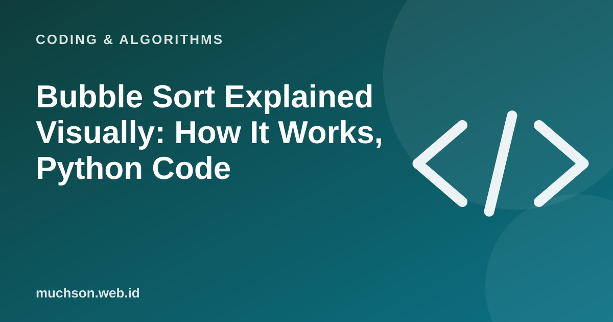

Home › Articles › Coding & Algorithms
Coding & AlgorithmsBubble Sort Explained Visually: How It Works, Python Code
Bubble sort is not the fastest algorithm. But because it is so simple, it is often the way in to understanding how computers sort data. Here you can run it step by step, go backwards and repeat until you really get it.

The basic idea in one sentence
Compare two neighbouring numbers, swap them if the order is wrong, then repeat from the start until nothing needs swapping. The largest number "bubbles" to the right end on every pass, like an air bubble rising to the surface, which is where the name comes from.
Text description of the diagram
- Start at the left: take the first two numbers
- Compare: is the left one bigger?
- Swap if needed: so the smaller is on the left
- Move one box along: repeat to the end
Try it yourself
Watch two things: the tallest bar always "walks" to the right, and after the first pass one bar at the right end is already final. That is why the next pass no longer needs to check that end.
Python code
def bubble_sort(a):
n = len(a)
for i in range(n - 1):
swapped = False
for j in range(n - 1 - i):
if a[j] > a[j + 1]:
a[j], a[j + 1] = a[j + 1], a[j]
swapped = True
if not swapped: # already sorted, stop early
break
return a
print(bubble_sort([5, 2, 9, 1, 7])) # [1, 2, 5, 7, 9]The variable swapped is a small optimisation: if a full pass swaps nothing, the data must already be sorted and we may stop. On almost-sorted data this makes bubble sort very fast.
How slow is it? Time complexity
There are two nested loops, so for n items about n × n comparisons are needed. In Big O notation that is written O(n²). It means that if the amount of data doubles, the work becomes about four times as much. Move the slider below and see for yourself how O(n²) balloons compared with other algorithms.
| Algorithm | Best case | Average case | Worst case | Extra memory |
|---|---|---|---|---|
| Bubble sort | O(n) (with the swapped flag) | O(n²) | O(n²) | O(1) |
| Selection sort | O(n²) | O(n²) | O(n²) | O(1) |
| Insertion sort | O(n) | O(n²) | O(n²) | O(1) |
| Merge sort | O(n log n) | O(n log n) | O(n log n) | O(n) |
| Quick sort | O(n log n) | O(n log n) | O(n²) | O(log n) |
Compare it with its two siblings
Want to see its siblings move? Change the settings in another article on this site, or copy the code above and change the contents yourself.
When is bubble sort worth using?
- Learning. To understand nested loops, swapping and Big O.
- Very small data or almost-sorted data, with an early-stop flag.
- Not for production with large data. Programming languages already provide much faster sorting (
sorted()in Python uses Timsort).